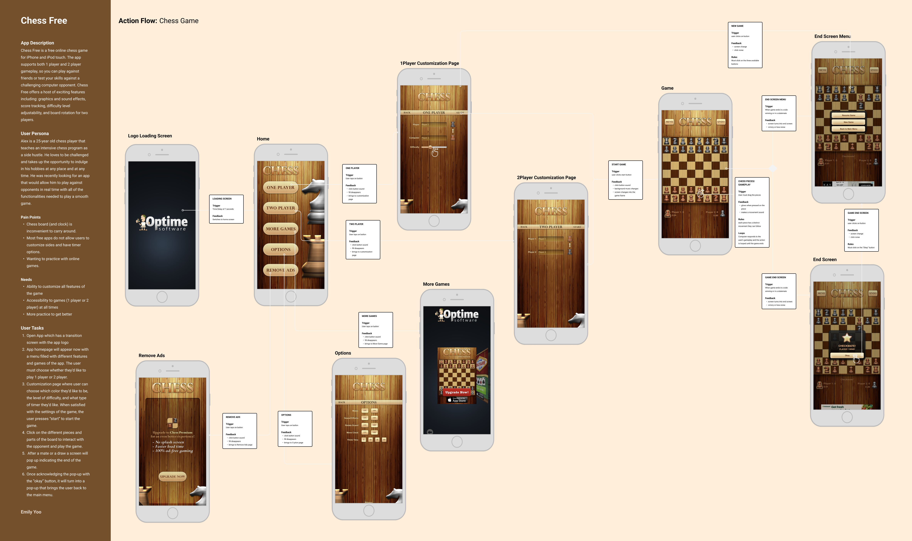
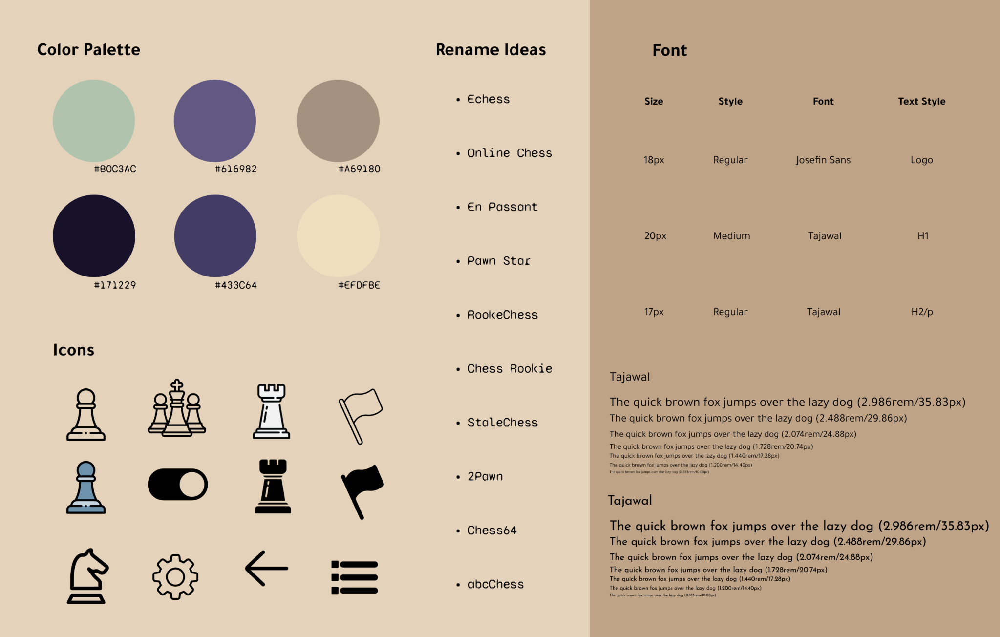
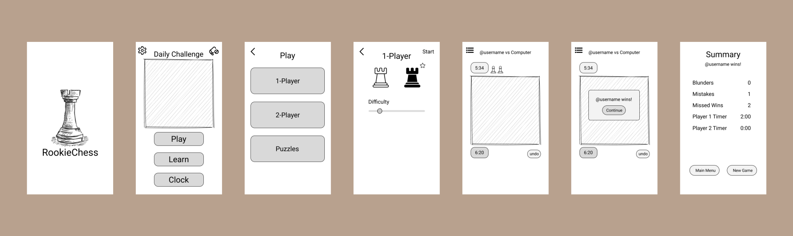
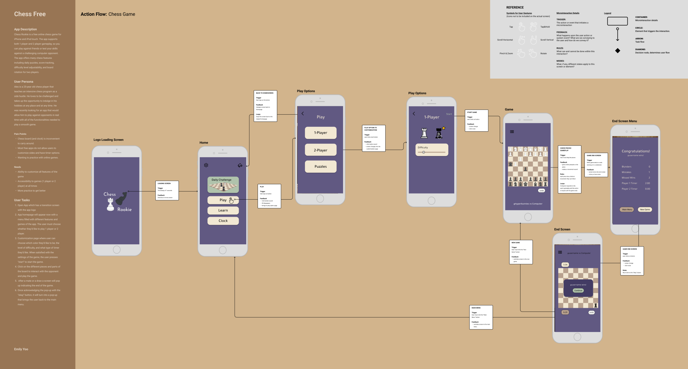
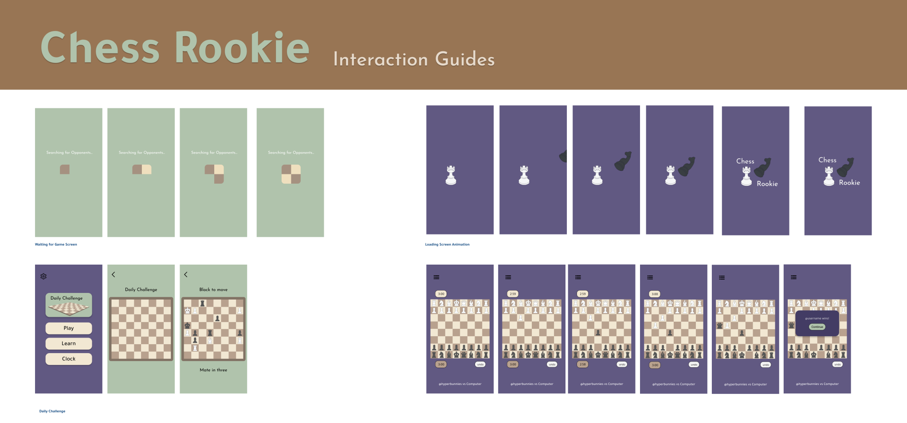

ChessRookie
OVERVIEW
For one of my Interaction Digital Media, or IDM 213 class, I chose to rebrand an online mobile Chess game into ChessRookie. This was a solo project tasked to entirely redesign and create interaction prototypes showcased through a final video going over the task flow. However, Chess Free is a free online chess app that supports 1-2 player gameplay allowing users to play against friends or test skills against a computer opponent. The app offers many features needed for a game of simple chess including daily puzzles, score tracking, difficulty level adjustability, and board rotation for two players. However, there is a lack of customization accessibilities and a difficult-to-understand navigation system. The color palette is limited and oversaturated which contributes to the low design contrast and the texture of the background in addition to many ombre graphics create visual distractions.
Class:
Interaction Digital Media 213
Time Constraint:
10 Weeks (April 2023 – July 2023)
Programs:
Figma, After Effect, Illustrator
- UI Design
- UX Research
- Branding

Process
Task Flow
In order to create the most efficient platform for mobile Chess, I started out reviewing and analyzing the reference. By analyzing the flow of Chess Free, I could better understand fundamental screens of the original.
Rebrand Research
When considering the new design themes, I knew I wanted to encourage a more cartoonish and animated style to center the focus on the app being a light-hearted fun game. The font and icons were chosen to maintain a simple and straightforward aesthetic, emphasizing a focus on the game. The intention is to actively engage the player to the fullest extent.
The color scheme features predominantly neutral tones, characterized by subdued green and muted purple hues. Complementary colors are strategically introduced to ensure ample contrast, with accents of various brown shades paying homage to a crucial element in chess—the board.
Interaction Sketches
In order to bring my ideas into life, I did a rough sketch of possible micro-interactions to incorporate into the final prototype. Following up with my original plans to make the app cartoonish, I wanted to bring energy to certain Chess pieces that would act as the logo and loading screen. I played around with transition ideas that could engage the players during times of waiting.
Wireframe
Illustrating the wireframe allowed me to connect the paths between pages and consider the task-flow of the redesigned app. Having a visual representation of the interface helped me plan out the layout of each screen and mentally note the interaction ideas from earlier along with where I want them.

The most popular demographic for Chess are young adult men and here we have Alex to represent this audience.
Action Flow
This part of the process was where a lot of the previous planning began to become more concrete as the high fidelity designs were layed out.
Interaction Guides
Right before being imported into After Effects, the high-fidelity screens were separated into micro-interaction keyframes. Motion is a major aspect of every digital interaction between the product and the user as it creates an overall intuitive experience. Especially in a game such as Chess centered around reacting to the opponent’s decisions, the animations must be efficient and memorable.
Result
VIEW PROTOTYPE ANIMATIONConclusion
This project was very much a projection of myself as a Chess player and my struggles when searching for a redeeming mobile application with all my desired customization functions. I am overall proud of the work I’ve done considering it was my first experience using After Effects and animating my own micro-interactions. I also branched out of my usual style of graphics to focus on clean, minimalistic design that were more user-centered.
Reflecting back, I noticed the lack of button trigger feedbacks forcing a 2-dimensional feeling to the interface. The speed of the responses were also rather slow from a user standard. This project definitely created more opportunities to empathize myself in the perspective of the user and widened the world to interaction design.